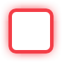

<template>
    <div class="bg">
        
    </div>
    <group style="width: 1280px;height: 720px;overflow: hidden;" view-locate="center">
        <div class="title" style="left: 40px;top: 40px;">Keyboard</div>
        <div class="view_bg" style="top: 80px;"></div>
        <group class="group_view" style="top: 80px;" view-locate="center" first-focus>
            <div class="second_title" style="left: 40px;">medium</div>
            <div class="second_title" style="left: 40px;top: 28px;">(size：390, 390,字母按钮size：60，60)</div>
            <keyboard style="left: 40px;top: 60px;" size-type="medium"></keyboard>

            <div class="second_title" style="left: 480px;">small</div>
            <div class="second_title" style="left: 480px;top: 28px;">(默认，size：330, 330,字母按钮size：50，50)</div>
            <keyboard style="left: 480px;top: 60px;" size-type="small"></keyboard>

            <div class="second_title" style="left: 920px;">mini</div>
            <div class="second_title" style="left: 920px;top: 28px;">(size：270, 270,字母按钮size：40，40)</div>
            <keyboard style="left: 920px;top: 60px;" size-type="mini"></keyboard>

            <div class="second_title" style="left: 1360px;">制定大小（210，210）</div>
            <div class="second_title" style="left: 1360px;top: 28px;">(size：210, 210,字母按钮size：30，30)</div>
            <keyboard style="left: 1360px;top: 60px;" size="210,210"></keyboard>
        </group>

        <div class="title" style="left: 40px;top: 620px;">Keyboard,定制字母</div>
        <div class="view_bg" style="top: 660px;"></div>
        <group class="group_view" style="top: 660px;" view-locate="center">
            <div class="second_title" style="left: 40px;">指定颜色,上焦white，文字green</div>
            <keyboard style="left: 40px;top: 60px;" focus-color="white" value-color="green"></keyboard>

            <div class="second_title" style="left: 480px;">定制字母按钮</div>
            <keyboard style="left: 480px;top: 60px;">
                <button value-color="black" id="button">
                    <div style="background: white;border-radius: 7px;" id="bg"></div>
                </button>
            </keyboard>

            <div class="second_title" style="left: 920px;">焦点大于按钮，需要特殊设置</div>
            <div class="second_title" style="left: 920px;top: 28px;">
                焦点大于按钮，使用keyboard控件无法完美实现，需要使用recycle自定义实现
            </div>
            <recycle style="width: 363px;height: 363px;left: 920px;top: 60px;" id="keyboard">
                <div style="width: 88px;height: 88px;"></div>
                <button style="left: 19px;top: 19px;" value-color="black" size="50,50" id="button">
                    <div style="background: white;border-radius: 7px;" id="bg"></div>
                    
                </button>
            </recycle>
        </group>
    </group>
</template>
